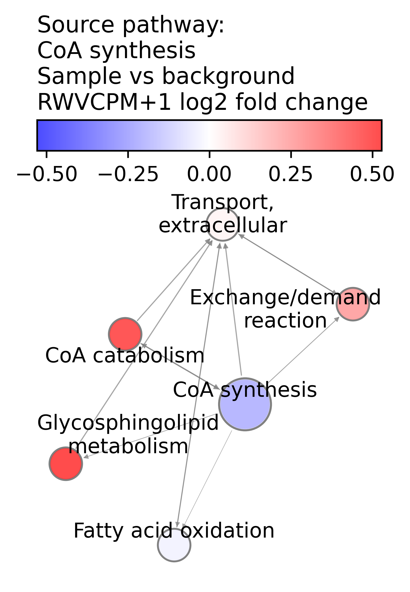
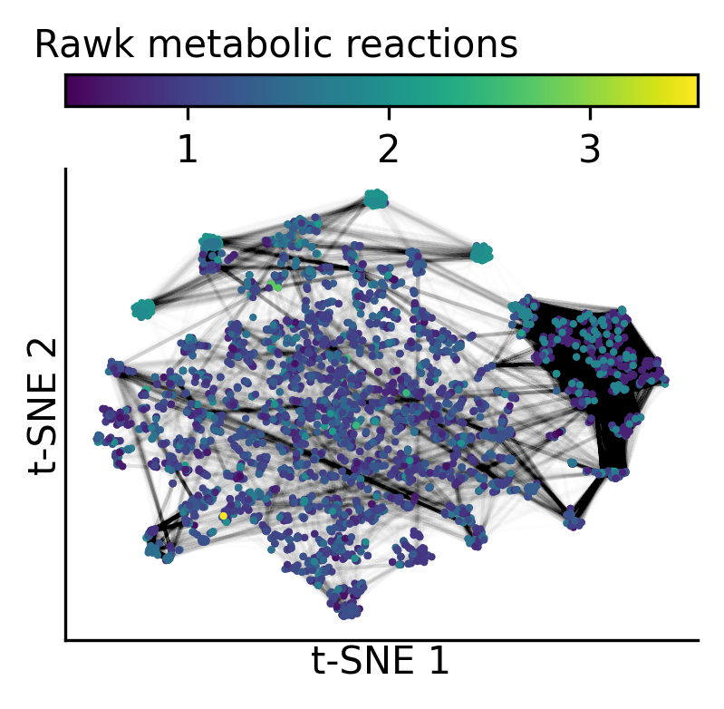
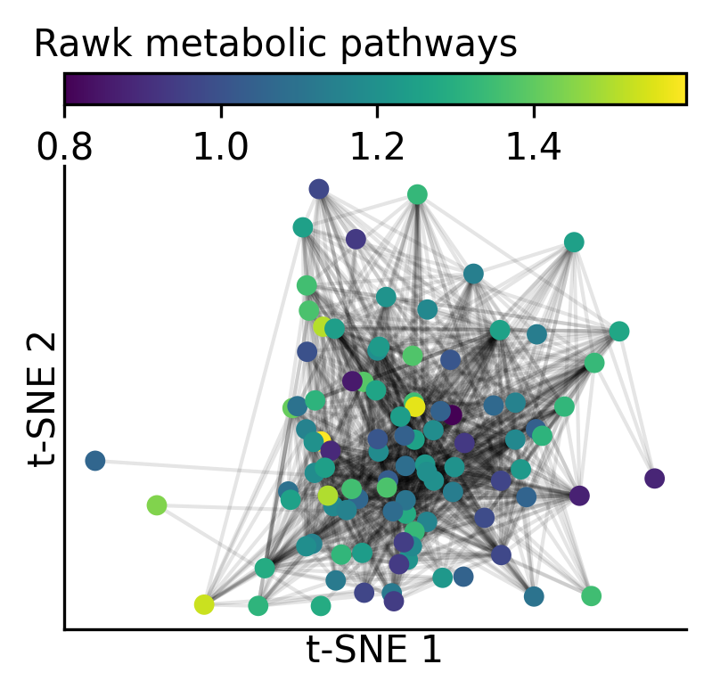
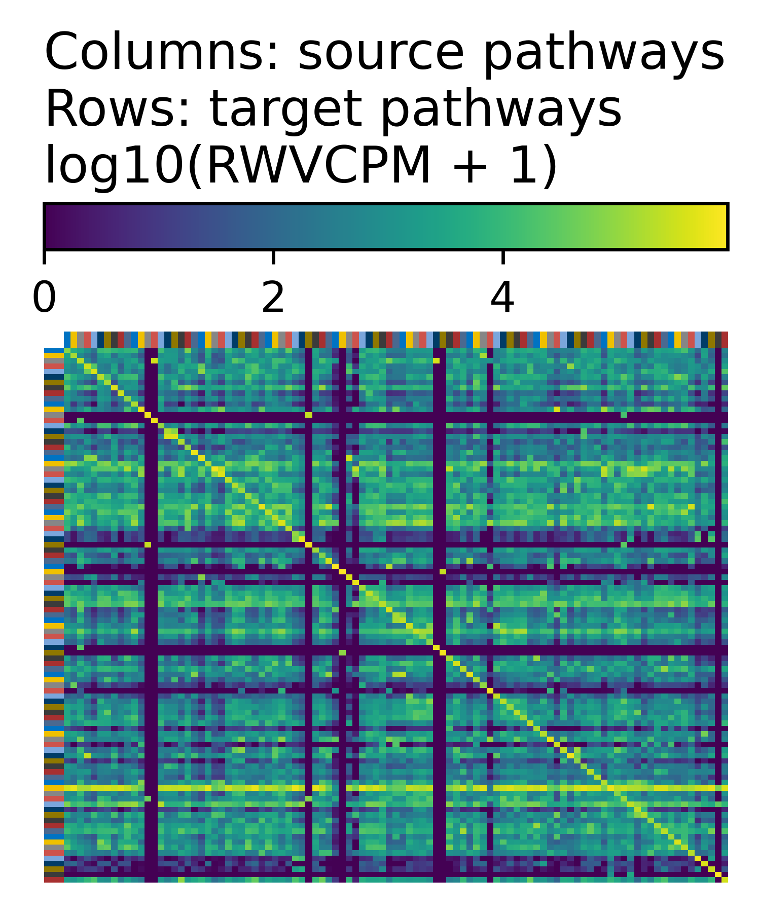

This tutorial shows how to use Rawk to analyze the Level 5 moderated z-scores of the human L1000 assay dataset of cellular responses to chemical and genetic perturbagens.
import rawk as rk
import pathlib
import os
import pandas as pd
import numpy as np
out_dir = os.path.join(
"tutorial_output",
"example_human_data_analysis")
pathlib.Path(out_dir).mkdir(parents=True, exist_ok=True)
original_data_df = pd.read_csv(
os.path.join(
"tutorial_data",
"human_l1000_level5_zscores.csv"))
mrn_node_df = pd.read_table(
os.path.join(
"tutorial_output",
"construct_recon3d_mrn",
"recon3d_unfiltered_nodes.tsv"))
mrn_edge_df = pd.read_table(
os.path.join(
"tutorial_output",
"construct_recon3d_mrn",
"recon3d_pruned_edges.tsv.gz"),
low_memory=False)
# Select the first gene column and one or more other
# columns for running rawk
#
# Here, select columns gene and
# LJP005_HA1E_24H_G13___HA1E___withaferin-a___10_0_um___24_h
columns_for_rawk = [
"gene",
"LJP005_HA1E_24H_G13___HA1E___withaferin-a___10_0_um___24_h",
]
df_for_rawk_analysis = original_data_df.loc[:, columns_for_rawk]
def preprocess_1d_arr(x):
p = np.e ** rk.qn_transform(
x, log1p=False, collapse_0s=False,
center=True)
return p
pp_node_df, pp_edge_df = rk.get_met_net_dfs(
mrn_node_df, mrn_edge_df,
df_for_rawk_analysis,
# edges were pruned, so no additional filter
0,
fill_missing_gene_prop=None,
transform_gene_prop_func=preprocess_1d_arr)
msrk = rk.MultiSampleRawk(
pp_node_df.drop(columns=["rxn_name", "equation"]),
pp_edge_df,
n_jobs=1,
n2v_walk_length=20,
n2v_num_walks=8000,
seed=42,
)
mrn_n_genes_by_pathway = (
mrn_node_df
.groupby("pathway")["gene"]
.apply(lambda x: len(set(x)))
.to_dict()
)
pathways_for_testing = [
p for p, n in mrn_n_genes_by_pathway.items()
if n >= 5 and p != "Miscellaneous"]
rk_fdr_df, rk_es_df = msrk.test_num_steps(
pw_subset=pathways_for_testing)
plot_pathway = "CoA synthesis"
plot_rawk = msrk.rawk_list[0]
# each Rawk instance has a sample and a background sample
assert plot_rawk.sample.name == df_for_rawk_analysis.columns[1]
assert plot_rawk.bg_sample.name == "uniform_background"
rk.plot_pw_neighborhood(
plot_rawk,
plot_pathway,
os.path.join(
out_dir,
"rawk_pathway_nbr_rwv_cpm_p1_log2fc.png"),
"rwv_cpm_p1_log2fc",
node_color_center=0,
n_cutoff=6, node_alpha=0.7,
node_color_title=(
"Sample vs background\n"
"RWVCPM+1 log2 fold change"
),
title=f"Source pathway:\n{plot_pathway}")

rk.plot_graph(
plot_rawk.sample.rxn_graph,
plot_rawk.sample.rxn_pos,
os.path.join(
out_dir,
"rawk_mrn_reaction_tsne.png"),
draw_edges=True,
non_s_pw_node_size=4,
title="Rawk metabolic reactions",
dim_name="t-SNE")

pathway_pos = {
n: d["pw_pos"]
for n, d in plot_rawk.sample.pw_graph.nodes.items()
}
rk.plot_graph(
plot_rawk.sample.pw_graph,
pathway_pos,
os.path.join(
out_dir,
"rawk_mrn_pathway_tsne.png"),
node_color_attr="pw_property",
non_s_pw_node_size=30,
draw_edges=True,
title="Rawk metabolic pathways",
dim_name="t-SNE")

rk.plot_rawk_sample_mtx(
plot_rawk.sample,
os.path.join(
out_dir, "rawk_test_sample"))

rk_fdr_df.to_csv(
os.path.join(out_dir, "rawk_fdr.tsv"),
sep="\t", index=False)
rk_es_df.to_csv(
os.path.join(out_dir, "rawk_es.tsv"),
sep="\t", index=False)